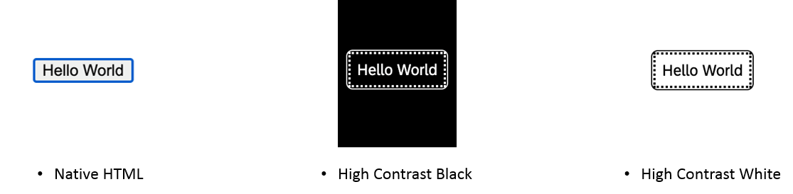

SAP Fiori default theme (Horizon) fulfills the requirements for minimum color contrast of Web Content Accessibility Guidelines WCAG 2.1. UI5 provided themes: Morning Horizon, Evening Horizon, High Contrast White, High Contrast Black.
Icon library ensures consistent icon usage within a product and also across products. See, Icon Explorer.
Focus visualization is very important for user efficiency.
The user interface needs to be adapted to the user's device.
Users can adjust the font size themselves using the browser zoom. The responsive layout adapts to these manual adjustments automatically.